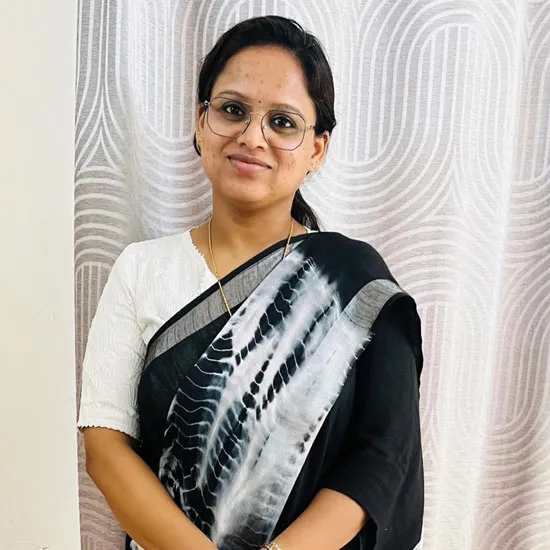

Home Amrita Nambiar

Assistant Professor
LLM International Law (University of New South Wales, Sydney),
LLM IPR (Cochin University of Science and Technology, Kerala,
India)
Amrita Nambiar is a legal professional with rich and diverse industry experience. She graduated with a law degree from the University of Kerala and holds an LLM in Intellectual Property Rights from the Cochin University of Science and Technology, Kerala. She also recently pursued a second LLM with an overall distinction in the field of International Law from the University of New South Wales (UNSW), Australia. She is the recipient of the Dean’s List 2022; Academic Achievement Award for the course on Law of the Sea at UNSW and has received High Distinction in the courses of Globalization and Intellectual Property, International Investment Law, and Law of the Sea.
Amrita also has considerable practical experience, including court practice, teaching, and serving in regulatory and advisory bodies. Amrita collaborated with leading professionals from IIT-Delhi, several NGOs, and numerous state transport officials during her tenure as the Legal Expert in the Supreme Court Committee on Road Safety, under the chairmanship of Hon’ble Supreme Court Justice K.S.P. Radhakrishnan (retd.). She has also gained significant experience in competition law and policy while at the Competition Commission of India, and has contributed to amending procedural regulations pertaining to the assessment of mergers and acquisitions. Currently, she is pursuing research in the areas of transformative biodiversity governance, competition law and sustainable development, and international investment law.
At VMLS, besides teaching Amrita also serves as the Faculty Coordinator at the Centre for Justice through Technology and the Faculty Advisor of the National Education Policy Student Club.